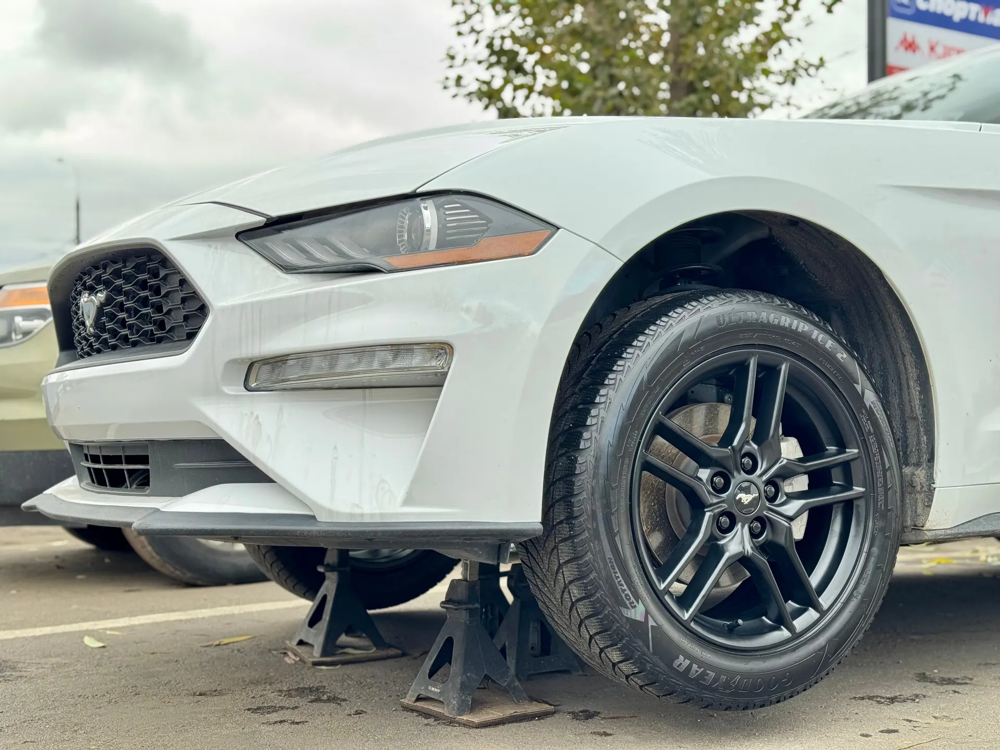
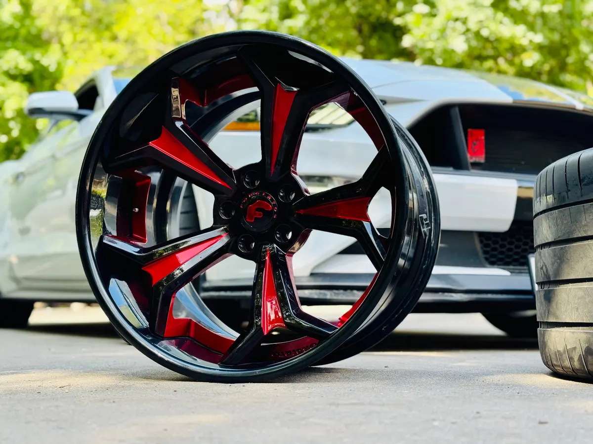
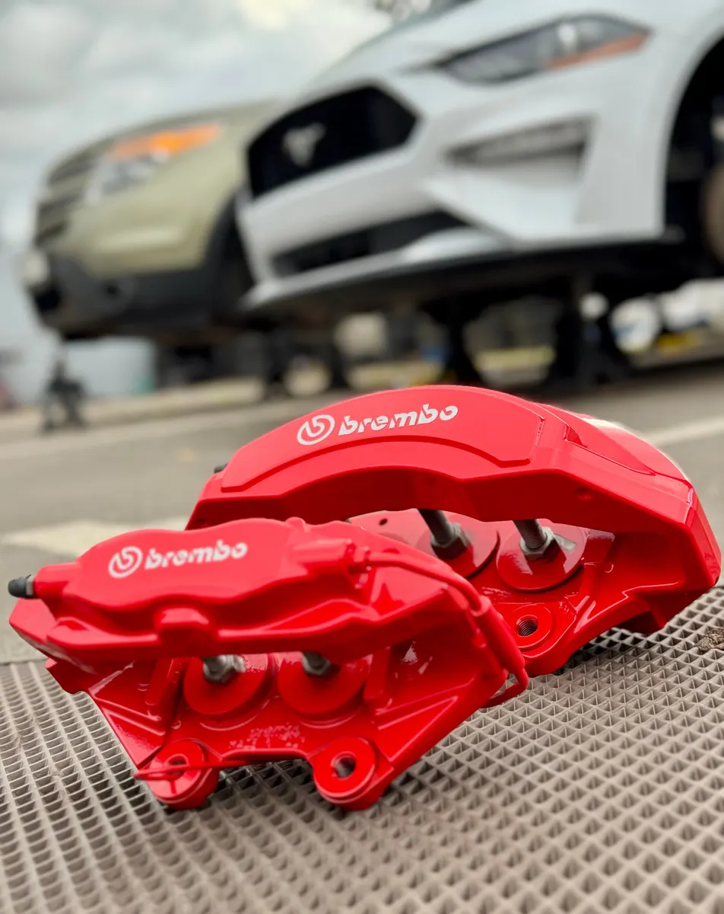
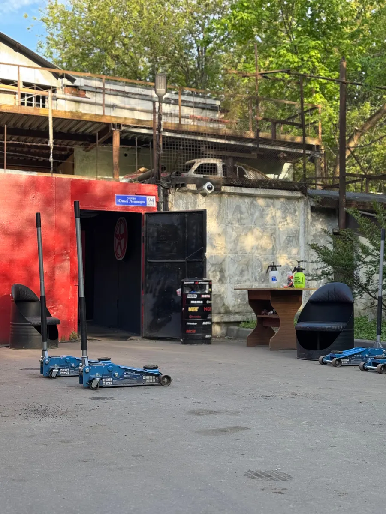

Шиномонтаж · покраска дисков · Москва
Шиномонтаж и покраска дисков в Кузьминках
Каждый день с 9 до 21. Шиномонтаж, балансировка, вулканизация, правка и покраска дисков, хранение шин. Выберите время и услугу или позвоните.
- Каждый день с 09:00 до 21:00
- Покраска и реставрация дисков, правка, сварка аргоном
- Оплата картой, по СБП и переводом

Услуги
Прайса на карточке на Яндекс.Картах нет, поэтому цену уточняйте по телефону +7 (903) 506-93-13. Услуги - по особенностям карточки.
Колёса и шины
- Шиномонтажуточнить
- Балансировкауточнить
- Вулканизацияуточнить
- Хранение шинуточнить
- Утилизация шинуточнить
Диски и суппорты
- Правка дисковуточнить
- Сварка аргономуточнить
- Алмазная проточка дисковуточнить
- Покраска и реставрация дисковуточнить
- Покраска суппортовуточнить
Оплата картой, по СБП, банковским переводом и наличными, по данным карточки.
Как проходит
- 01
Выбрали услугу и время
Остаётся позвонить по номеру +7 (903) 506-93-13 и назвать выбранное время.
- 02
Приехали на Юных Ленинцев, 94
Двор и вход - по фото с карточки, рядом Есенинский бульвар.
- 03
Колёса пошли в работу
Клиент в отзыве: «Колёса, после прикручивания, довернули динамометрическим ключом с моментом».
- 04
Забрали машину
Клиент в отзыве: «Работа выполнена качественно и быстро».



Чем удобно
Покраска дисков и суппортов
В особенностях карточки: покраска и реставрация дисков. Фото работ - в галерее карточки.
Предварительная запись
Указана на карточке: выберите время в форме или позвоните.
Гарантия
Гарантия указана в особенностях карточки, условия уточняйте по телефону.
Работаем каждый день
С 09:00 до 21:00 без выходных, по данным карточки.
Отзывы с Яндекс.Карт
«Обращался к ребятам по совету брата,ранее делавшего покраску дисков у них! Всё четко,качественно,быстро! Гарантия!!!Приемлимые цены!!! Буду рекомендовать и сам приеду ещё раз для покраски других дисков!!!»
Тимур Б. · 31 мая 2025
«Цена соответствовала заявленной. Работа выполнена качественно и быстро. Обратился по рекомендации друзей, два человека до меня красили диски у этих ребят. Все довольны, ездят уже несколько лет без проблем. Рекомендую.»
Антон Кукушкин · 1 октября 2025
«Сегодня попросил помочь поменять камеру в шине. Спасибо ребятам. Все сделали. Ребята отзывчивые, добродушные и отличные профессионалы. Рекомендую этот сервис.»
Евгений Ф. · 8 апреля 2026
Отзывы с карточки на Яндекс.Картах, без правок.
Частые вопросы
Когда вы работаете?
По карточке - каждый день с 09:00 до 21:00.
Нужна ли запись?
На карточке указана предварительная запись. Выберите время в форме на сайте или позвоните: +7 (903) 506-93-13.
Красите диски и суппорты?
Да, покраска и реставрация дисков указаны в особенностях карточки, а клиенты в отзывах пишут про покраску дисков.
Храните шины?
Хранение шин указано в особенностях карточки. Условия и цену уточняйте по телефону.
Сколько стоит?
Прайса на карточке нет, цену уточняйте по телефону +7 (903) 506-93-13.
Запишитесь на удобное время
- Адрес
- улица Юных Ленинцев, 94, корп. 3, стр. 1, Москва
- Часы
- Каждый день 09:00–21:00
- Телефон
- +7 (903) 506-93-13